🦧Icon
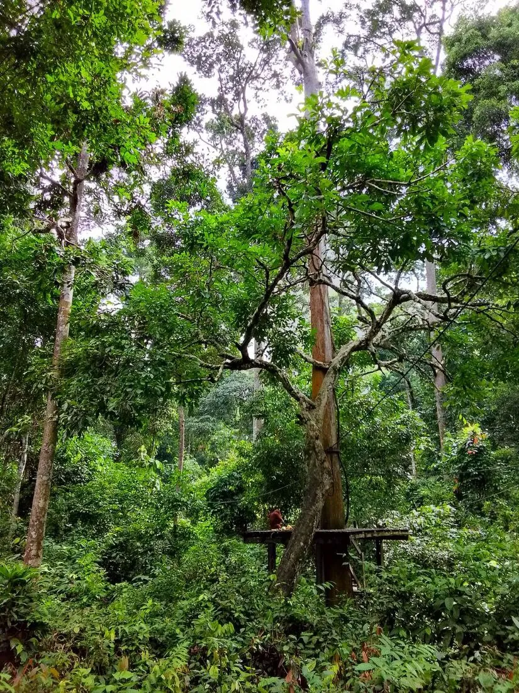
Sepilok
Unmissable
Borneo's headline act. Feeds at 10:00 & 15:00, one ticket covers both; RM30 + RM10 camera.[16] They're wild & free-ranging, so sightings are never guaranteed.[17]
🐻World-only
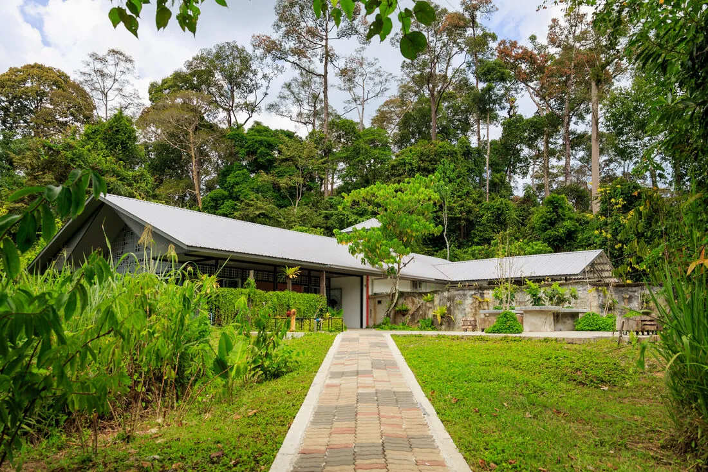
Sepilok
Unmissable
The world's only sun-bear sanctuary, right next door to the orangutans in the Kabili-Sepilok reserve.[18][19] Combine on one ticket-run; book online to skip queues.[42]
🛶Overnight
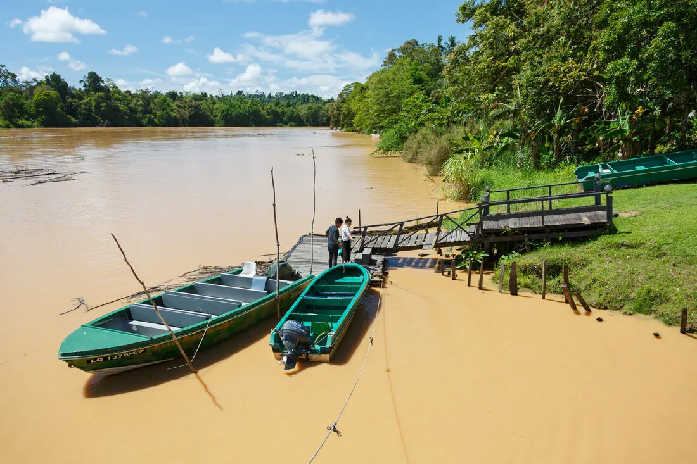
Day-trip / overnight
Icon
Kinabatangan River
Borneo's wildlife river — do it as a 2-night lodge stay (~4 cruises + dawn/night safaris), not a rushed day-trip.[31][43] Best corridor: Sukau/Bilit. Peak surcharge Jun & Sep 2026.[32]
🕊In memoriam
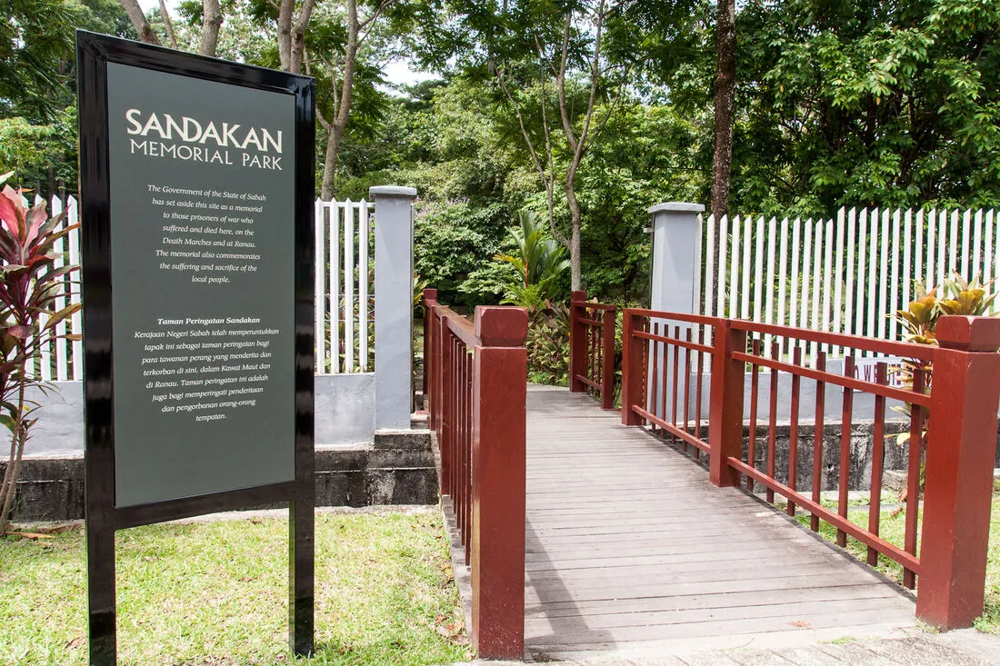
Taman Rimba
Moving
The most affecting sight. On the WWII POW-camp grounds: 2,434 Allied prisoners died, only six Australians survived.[9] Over 1,000 were force-marched 260 km to Ranau.[11] Free; service each 15 Aug.[10]
✎Colonial
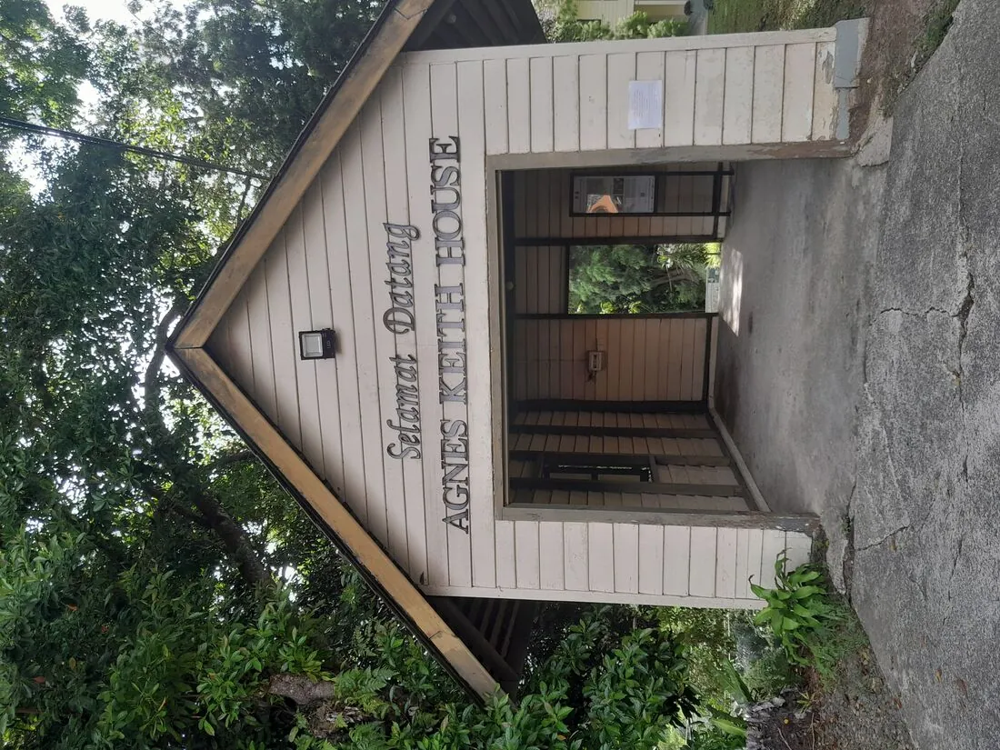
Sandakan hilltop
Headline stop
"Newlands" — home of author Agnes Newton Keith, who wrote Land Below the Wind (1939) here; museum since 2004.[6] Daily 9–5, RM15.[7] Pair with the colonial English Tea House next door.[8]
⛪Half-day
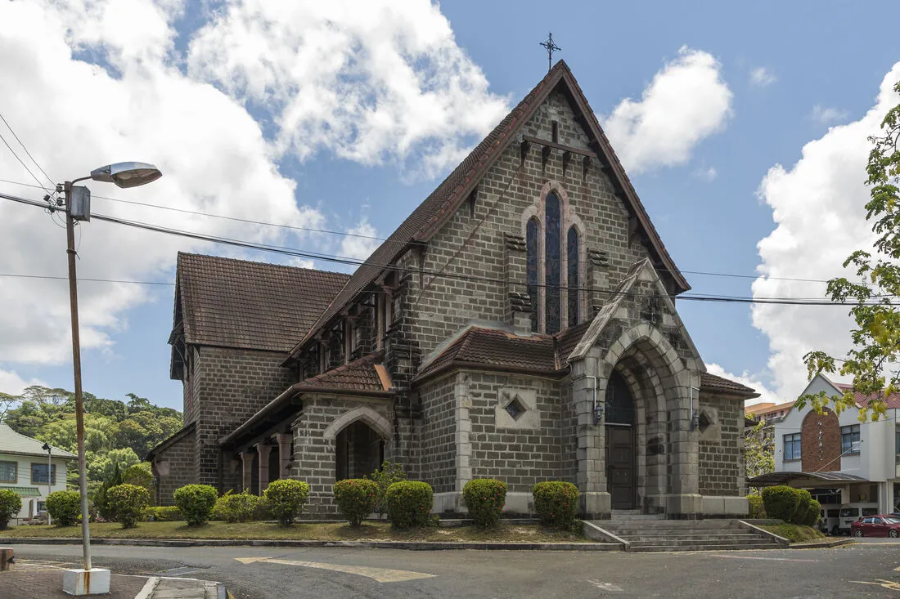
Sandakan town
Self-guided 1.5–3 h walk: Jamik Mosque → the 100 Steps → Agnes Keith → temples.[2] St Michael's is one of very few stone buildings in all Sabah (begun 1893).[3] Go early or after 3 pm.
🌇Sunset
Puu Jih Shih Temple
Hilltop Buddhist temple ~4 km west, the town's largest Chinese temple (1987) with a seven-tier pagoda.[12] Go late afternoon for commanding views over Sandakan Bay and the Sulu Sea — the best sunset in town.[13] Needs a Grab.
🌳Canopy
A 620 m canopy skywalk (longest in Sabah) up to 27 m high.[20] Open 8–5, RM30; the night walks (RM50) are the best low-effort jungle/birding add-on — book ahead.[21]
🐒Big-nose
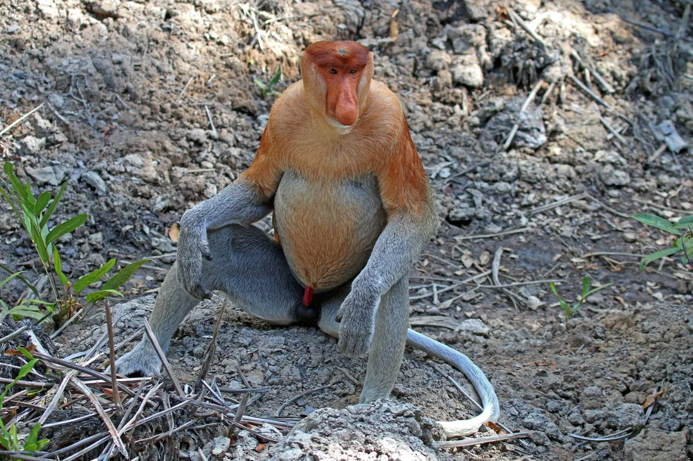
Sepilok day-trip
Near-guaranteed close views of the big-nosed monkeys at feeds: Platform A 9:30 & 14:30, B 11:30 & 16:30.[22] Adult RM60 + RM10 photo.[23] Touristy & habituated, but reliable.
🐢Bucket-list
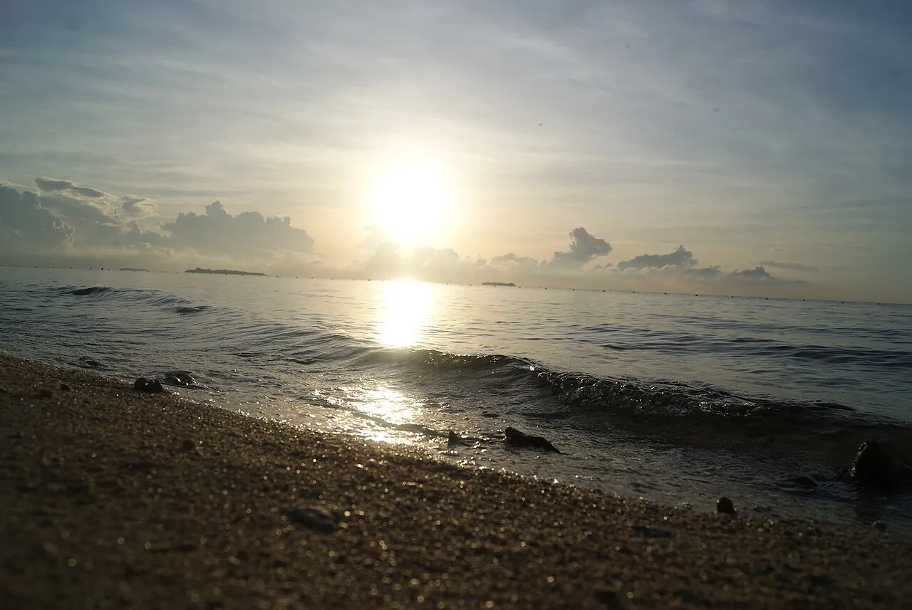
40 km north · overnight
If seas calm
Green & hawksbill turtles nest nightly, year-round; an overnight all-but-guarantees a nesting female, egg-collection & hatchling release.[25] Capacity ~50/night and it sells out even off-peak — book far ahead.[26][27]
🦇Pungent
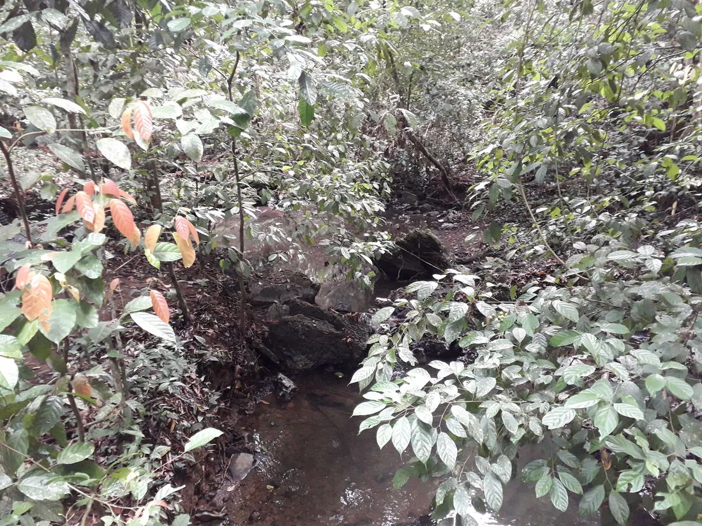
Kinabatangan day-trip
Gomantong Caves
Sabah's largest edible-bird's-nest cave — WWF-rated "best managed" — with the cathedral-like Simud Hitam chamber (ceilings to 90 m).[29] At dusk ~2 million bats pour out.[30] Not for the squeamish — guano & roaches.
🦐Local
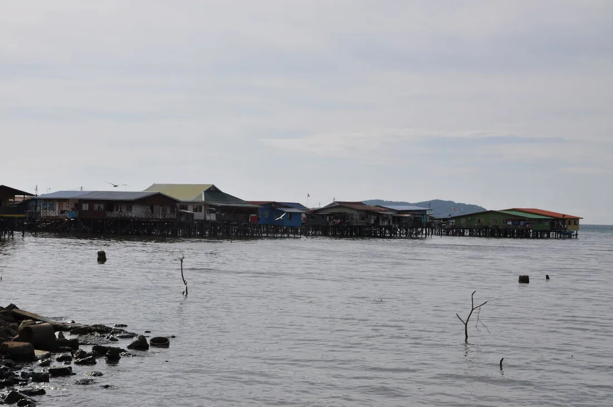
Sandakan waterfront
Central Market & Sim Sim
Lower-key & local. The stilt-village Buli Sim Sim — plank walkways over the water — marks the site of the original 1879 town and has floating seafood restaurants.[14] Cheap grilled seafood at the Central Market.[15]
🤿Divers only
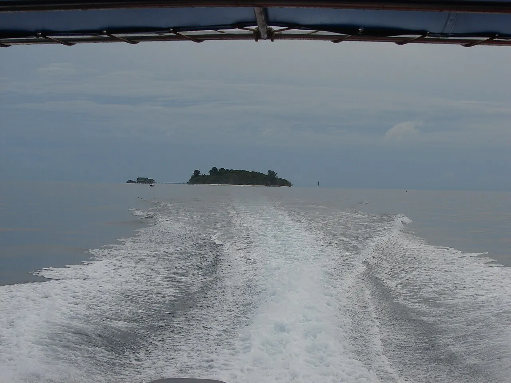
Dive side-trip
Lankayan Island
A luxury one-resort private island ~90 min by boat, with beach & over-water chalets and house-reef diving.[33] Transfers run daily only in peak (Jul–Sep), else 3×/week — it dictates your itinerary.[34] Commit several nights or skip.